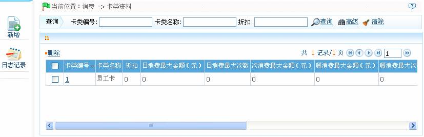
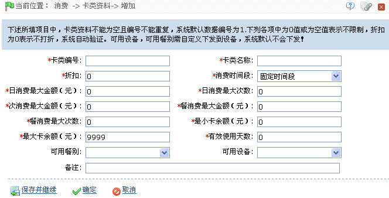

ID--8.6 卡类资料
单击【消费】 【卡类资料】，进入如下图所示卡类资料设置页面：
【卡类资料】，进入如下图所示卡类资料设置页面：

初次使用系统时，即默认存在一个“卡类编号”为“1”、“卡类名称”为“员工卡”的卡类资料。
用户可以在此页面中进行新增卡类、编辑和删除卡类和查看日志记录等操作。
1、新增卡类
（1）、单击卡类资料页面上的【新增】图标，进入新增卡类资料页面。

卡类编号：输入卡类编号，不可重复。
卡类名称：输入卡类名称，可重复。
折扣：默认状态下为0，即不打折，可输入的折扣范围是0-99。如果输入折扣，商品价格为单价*折扣*1%。
消费时间段：默认状态为所有时间段皆可使用。可以选择为固定时间段或8个批次中的任一时间段。
有效使用天数：输入天数，默认状态为0，代表长期有效。
可用餐别：默认状态下为所有餐别皆可。餐别的设置请参见ID--8.2.4 餐别资料。
可用设备：默认状态为所有设备皆可使用。设备的设置请参见5.2.2 新增消费设备。
餐别、设备：单击按钮，在弹出的餐别或设备下拉框中，选择餐别或设备。默认状态下所有餐别和设备皆可用。若选择了餐别和设备，则只有被选中的餐别和设备可用。
有效使用天数：收支“有效使用天数”。默认状态下为0，代表长期有效。
其他参数根据需要进行设置。
 注意：餐消费最大金额必须大于次消费最大金额。
注意：餐消费最大金额必须大于次消费最大金额。
（2）、设置完成后，单击【确定】按钮，保存并返回卡类资料页面；此时卡类资料列表中将显示刚新增的卡类资料。
 备注：用户可根据单击卡类资料所在行的“相关操作”下对应的【编辑】或【删除】按钮，进入对应的编辑或删除卡类资料页面，然后进行编辑或删除卡类资料操作。除“卡类资料”不可修改之外，卡类的其他参数皆可修改，具体操作同新增卡类一致。
备注：用户可根据单击卡类资料所在行的“相关操作”下对应的【编辑】或【删除】按钮，进入对应的编辑或删除卡类资料页面，然后进行编辑或删除卡类资料操作。除“卡类资料”不可修改之外，卡类的其他参数皆可修改，具体操作同新增卡类一致。
（1）、系统默认存在的卡类―“员工卡”，不可删除；
（2）、系统正在使用的卡类，不可删除，若执行删除操作，则弹出如下图所示的错误提示信息：